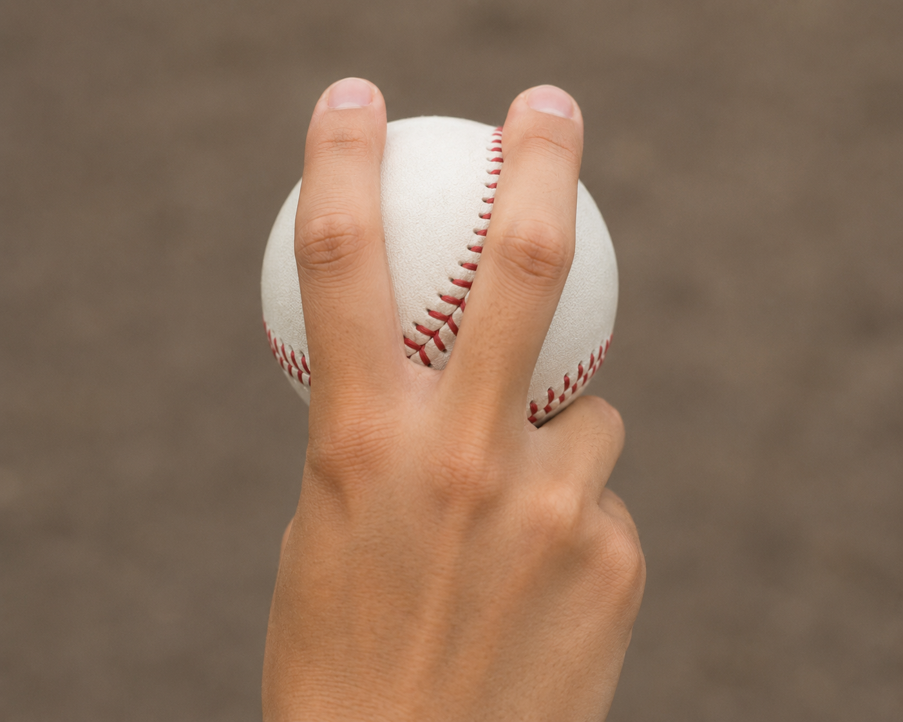
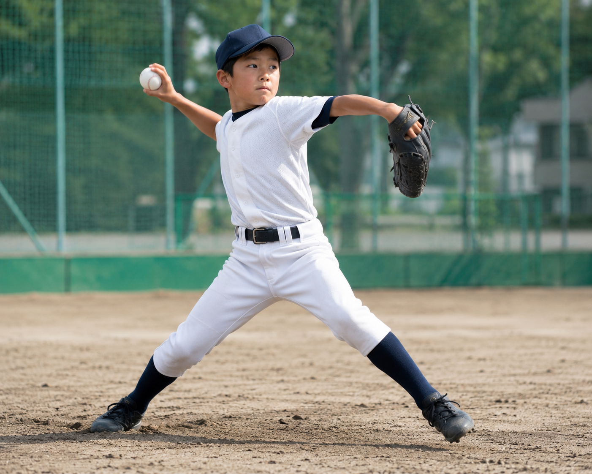

野球のデータ解析が進んだ現代において、「魔球」と呼ばれるものは科学的に紐解かれつつあります。ここでは、日米のトップ投手が現在進行形で駆使している最先端の勝負球と、成長過程にある小中学生でも負担なく投げられる球種について解説します。
1. 日米でトレンドの最先端変化球

現在のトレンドは「ピッチトンネル」という概念に基づいています。打者の手元までストレートと同じ軌道を描き、最後に小さく鋭く変化する球種が好まれます。代表的なものが150km/h近い速度で落ちる「スプリット」や、バットの芯を外す「ツーシーム（シンカー）」、そしてフリスビーのように横に大きくスライドする「スイーパー」です。これらは高い奪三振率を誇る現代の必須球種となっています。
2. 小中学生でも安全に投げられる球種

関節や靭帯が発達段階にある小中学生にとって、肘や肩を強くひねる変化球は怪我のリスクが伴います。そこで推奨されるのが、手首をひねらずに抜くように投げる「チェンジアップ」や、ボールの握りを少し変えるだけでストレートのタイミングを外せる「ツーシーム」です。これらは肩肘への負担が少なく、投球フォームのバランスを崩さずに習得できるため、最初の武器として最適です。
今週のおすすめ選手と武器（毎週金曜更新）
現在プロ野球・メジャーリーグで猛威を振るっている投手の「決め球」を分析します。
- 今週のピックアップ： NPB：阪神タイガース所属：高橋遥人投手の「ツーシーム」
- 特徴： ストレートと同じ腕の振りから、打者から見て右側に鋭く落ちる。球速がほぼ同じ
- 凄さの理由： ゆったりとしたフォームで球持ち良く、コントロール抜群で切れ味鋭い球を投げ込むため、追い込まれやすい
- この選手はここがすごい：フォームも微妙に変化させながら、緩急自在にボールを操っている。怪我が多かったが、３１歳で花開いた